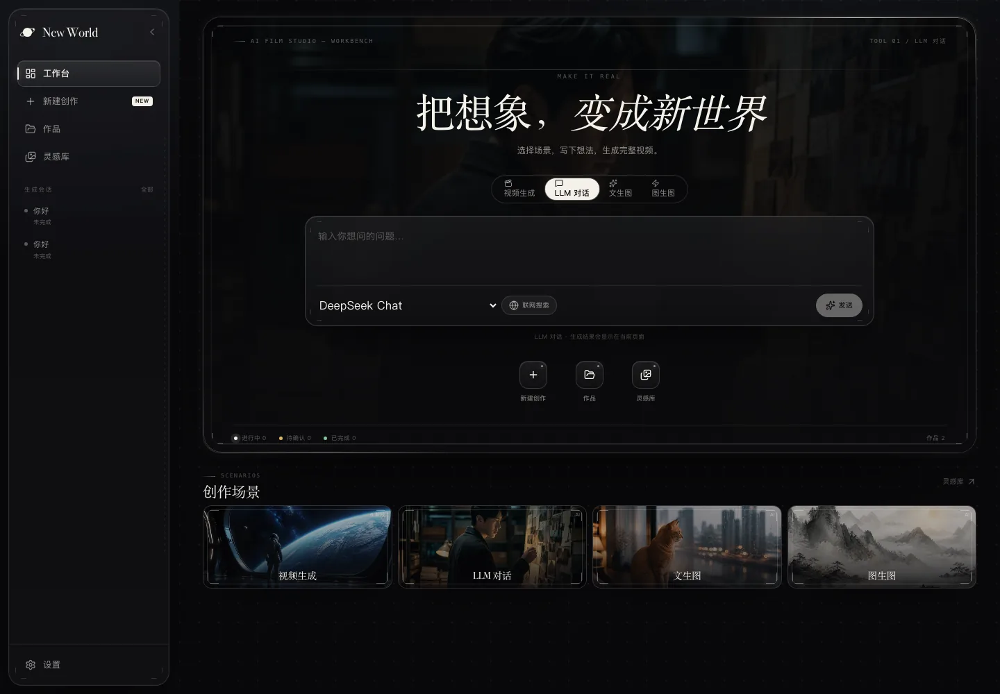
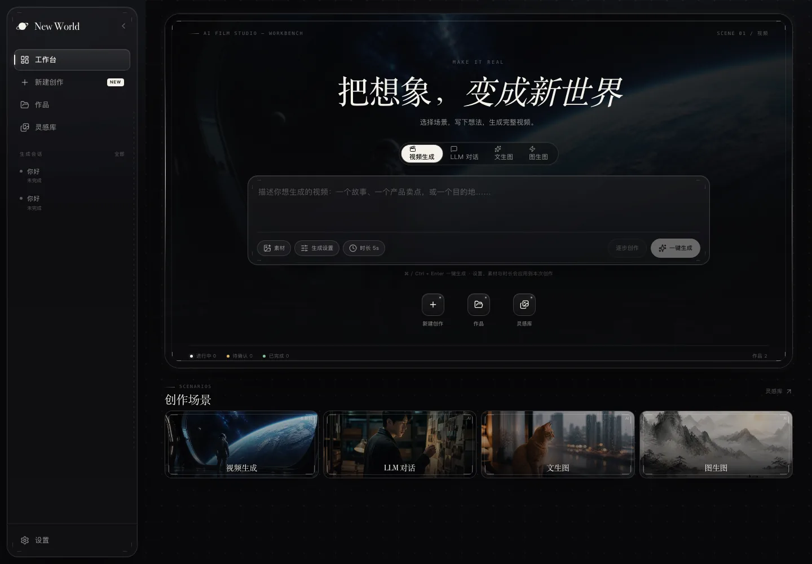
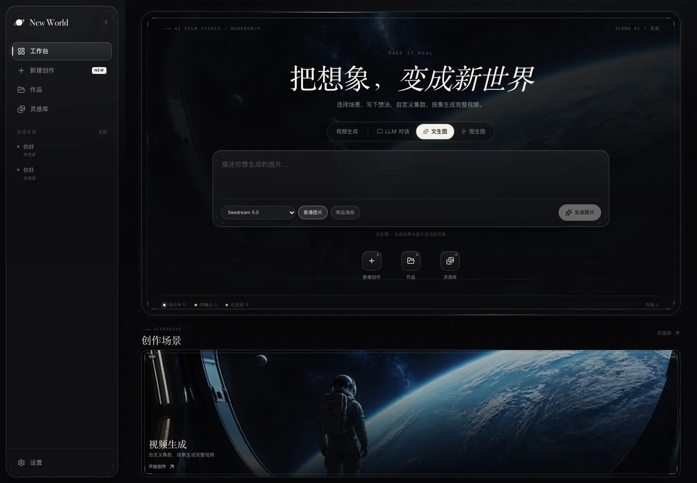
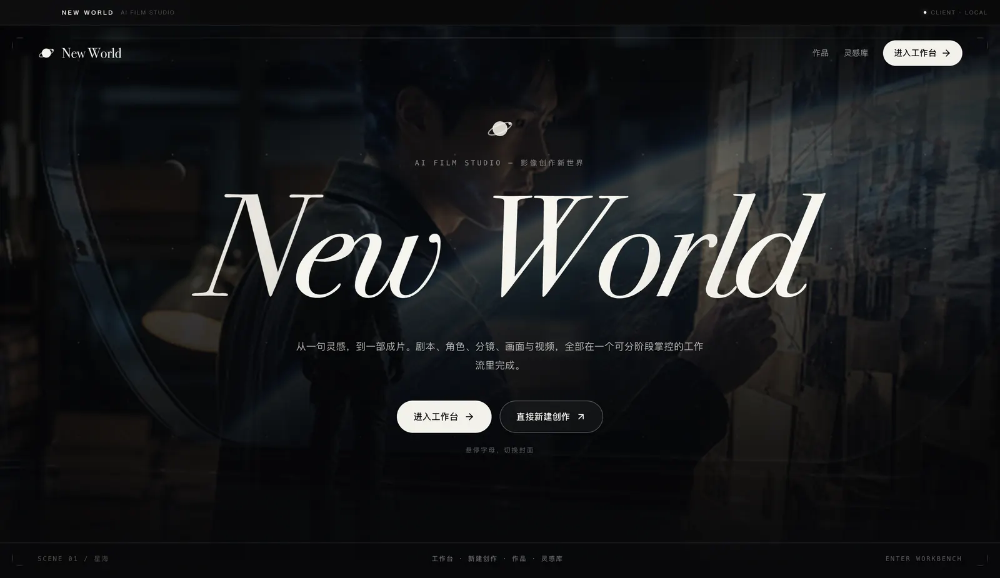

AI 短片 6 阶段
一句故事灵感 → 多集剧情短片，可逐集确认、修改、重新生成。品牌故事、微电影、个人 IP。
引擎、阶段、提示词、模型路由都在共享层；行业差异全部收敛到 backend/scenarios/<id>/ 一个文件夹里。
一个文件夹就是一个行业场景：阶段组合、默认参数、首页文案、领域提示词，换一个场景包就是另一个产品。
六种内置阶段类型可自由组合，上游产出自动同步到下游，阶段间状态机、断点续跑、持久化都已就绪。
每个阶段产出都可以查看、编辑、单项重生成；确认后才进入下一阶段，不会一路跑到底交出一堆废片。
通义、火山方舟、可灵、OpenAI、Gemini、DeepSeek 按 provider 路由，配置里换一行就换一家。
新增场景通常只需复制场景包、改 YAML 与提示词；需要更复杂的逻辑时，再给场景加自定义阶段 Agent。
同一套前后端，既能在本地 localhost:3000 跑，也能打包成 Electron 桌面客户端。
每个箭头之间都有人工确认节点；上游改动会自动标记下游需要重新生成。
深色工作台、阶段进度条、逐条可改的产出面板。点开任意一张可看大图。




复制一个场景包、改 YAML 和提示词，就是一个新行业产品——通常不需要写代码。
一句故事灵感 → 多集剧情短片，可逐集确认、修改、重新生成。品牌故事、微电影、个人 IP。
商品与卖点 → 30–45 秒竖屏带货视频，突出卖点与促销氛围，适合抖音 / 淘宝 / 视频号投放。
世界观与主角设定 → 竖屏多集漫画短剧，人物画风与叙事风格可定制。网文改编、轻小说漫改。
目的地与宣传重点 → 45–60 秒目的地宣传片，突出风光与人文。景区宣传、文旅账号更新。
商品与卖点 → 一组 3–4 张电商海报，纯图像流程、无需视频素材。主图、大促海报、多平台素材。
python3 scripts/new-scenario.py
前端只认“这个会话有哪几个阶段”，后端按场景包组装阶段列表并注入领域提示词。 学生改场景包，不改引擎。
/api/scenarios 渲染场景，工作流页按会话的 stages 渲染阶段。process() 返回产出与是否需要人工介入。backend/scenarios/<id>/scenario.yaml 声明阶段、默认参数与首页文案；prompts/ 覆写领域提示词。registry/models.yaml 里的 provider 路由到具体厂商。需要 Python 3.12+（uv）与 Node.js 18+。复制 .env.example 填上任意一家的 Key 即可开始生成；不填也能先把界面跑通。
POST /api/scenarios/reload 热加载，不用重启docker compose up 一键起前后端# 1. 克隆 git clone https://github.com/Mat11-oo/new-world.git cd new-world # 2. 启动前后端（首次会自动装依赖） ./scripts/dev.sh # 3. 打开 http://localhost:3000 # 前端 http://localhost:8000/docs # 后端 API # 可选：跑一遍后端测试 cd backend && uv run --extra dev pytest